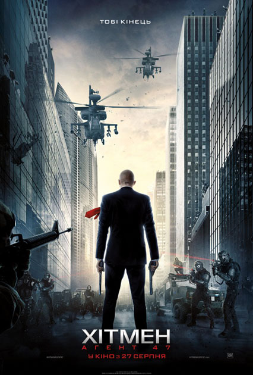
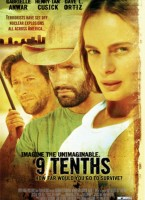
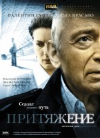
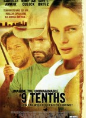
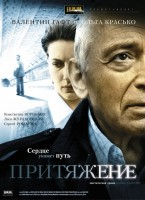
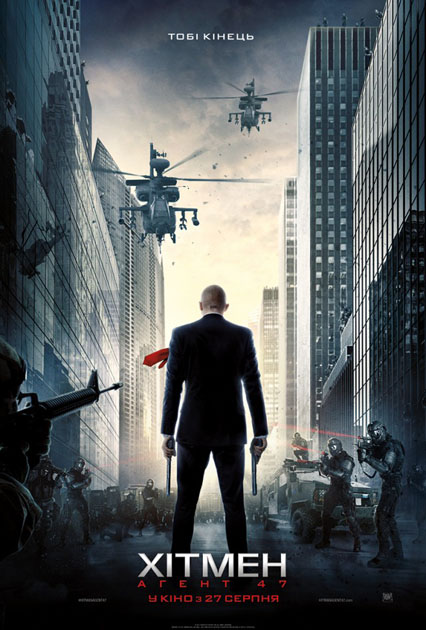

{kind=link}
{kind=link}
{kind=link}
{kind=link}
{kind=link}
{kind=link}
{kind=link}
{kind=link}

 




История об элитном убийце, созданном при помощи генной инженерии. Его очередной целью становится молодая женщина, скрывающаяся от влиятельной подпольной организации. Неожиданно эта миссия становится поразительным откровением для убийцы и его цели, сталкивая их обоих с их собственным прошлым...
Молодая супружеская пара Джессика и Уильям покидают Лос-Анджелес, решивпровести лето на своем новом ранчо в сотне миль от цивилизации. Однако, прибыв на место, они с удивлением обнаруживают, что их дом уже занят. Мексиканец Элиас давно живет на ранчо и не желает его покидать.
Уильям хочет как можно быстрее избавиться от незваного гостя, но у Элиаса свои планы на дом. В это время несколько крупных городов Америки попадают под прицел террористов, ядерная угроза повисает над миром. Через несколько дней они ловят по радио сообщение, что мира, каким они его знали, больше не существует — ядерный взрыв уничтожил все вокруг. Теперь их уединенное ранчо — возможно единственный кусочек, оставшийся от старой жизни.
Уильяма, Джессику и Элиаса ждет множество испытаний и лишений, им придется все начать с чистого листа и научиться жить вместе. Два мужчины и одна женщина... Никто не знает границ необузданных страстей дикой человеческой натуры. Как далеко готов зайти человек, чтобы выжить?
Егор Глазунов работает в криминальной полиции столицы и обладает удивительным даром — "врать с листа". Это умение очень выручает его в далёком маленьком городе, которых на карте России великое множество. Сюда Глазунов отправляется помочь другу детства Артёму — обычному курьеру с необычными принципами, у которого угнали доставшийся ему по странному стечению обстоятельств "Мерседес". Все следы ведут к местному авторитету, подобраться к которому невозможно. Последний шанс — прийти с "проверкой" из "следственного комитета". Сюжет гоголевского "Ревизора" превращается в историю новой России...
Это история о девушке Маше. В нелепой автокатастрофе у нее погибает муж Олег. Но Маша не смогла проводить Олега в последний путь, потому что в это время была в командировке. После возвращения домой в жизни Маши начинают происходить странные события: ее брат ведет себя очень подозрительно, а ей каждую ночь снится один и тот же сон. Маша чувствует, что что-то не так. Она понимает, что от нее скрывают правду. Но сердце подскажет ей, где искать истину. Однажды Маша попадает в то самое место, которое приходит ей во снах. И именно там она знакомится с уже пожилым художником — Александром Николаевичем...
Компания студентов едет в Лас-Вегас, чтобы оттянуться там как следует в весенние каникулы. Один из ребят крадёт из отеля меч Тутмоса III, чем невольно распечатывает древнее проклятие...
История, представляющая понятие мира, в котором все одинаково ценны, и неважно будь то человек, животное или дерево. Это мир, который не опирается на противоположности, а мир, который воспринимается только как единое целое...
Морпех — первогодок Саня Ежов оказывается среди пиратов на захваченном танкере. Он знает — товарищи не бросят. Ему нужно выжить и помочь своим, когда начнется штурм. Фильм основан на реальных событиях 5 мая 2010 года, когда морские пехотинцы БПК "Маршал Шапошников" освободили захваченный в водах Аденского залива российский танкер "Московский университет". У них было только 22 минуты без права на ошибку...
Юная девушка Мария, оставшись сиротой, попадает под опеку монашек и готовится принять постриг. Но у героини слишком жизнелюбивый характер, поэтому настоятельнице монастыря ясно видно, что невеста Господня из ее подопечной вряд ли получится. Поэтому она предлагает ей пока поработать гувернанткой в семье отставного военного, настоящего патриота своего Отечества, недавно потерявшего жену и теперь в одиночку воспитывающего семерых детей...
Маленькая английская деревенька отделена древней стеной от сверхъестественной параллельной вселенной, где царят магия и волшебство. Молодой Тристан Торн опрометчиво обещает самой красивой девушке деревни, что принесёт ей слетевшую с неба звезду, упавшую по ту сторону стены.
На своём пути по следам древних легенд Тристан встретит всесильного короля и его заговорщика-сына, могущественную ведьму, капитана пиратского корабля и хитроумного торговца, а также найдёт свою истинную любовь, ключ к пониманию своей сущности и судьбы, о которой он мог только мечтать.